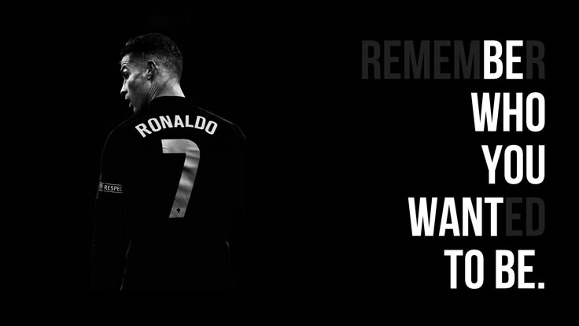

El lunes me quedé viendo el partido.
No por el resultado. No por el fútbol. Me quedé porque sabía que algo se estaba cerrando, y esas cosas merecen testigos.
Cristiano Ronaldo jugó su último Mundial. Portugal cayó ante España. Y mientras miraba la pantalla, sin poder explicar exactamente por qué, sentí que ese partido tenía algo que decir sobre cosas mucho más importantes que el fútbol.
Seis Mundiales. Ninguna copa.
2006. 2010. 2014. 2018. 2022. 2026.
Seis veces fue al lugar más grande del fútbol. Seis veces volvió sin el título.
27 partidos. Más de dos mil minutos en el campo. El jugador con más apariciones mundialistas en la historia de Portugal. 134 goles por su selección. Un hombre que le dio todo lo que tenía. Y el trofeo no llegó jamás.
La lógica dice que eso es un fracaso. Pero algo no cuadra. Porque nadie habla de él como un perdedor.

No siempre gana el que más lo intenta.
Ni el que más lucha. Ni el que más lo sueña.
El mito que todos compramos
Desde pequeño te enseñan que si te esfuerzas lo suficiente, llegas. Que el trabajo duro tiene recompensa. Que la dedicación tiene un precio justo.
Eso, en algún nivel, es una mentira bien intencionada.
No porque el esfuerzo no importe — importa enormemente. Sino porque el mundo no es una máquina justa donde el input de entrega siempre produce el output de victoria. Hay variables que no controlas. Hay rivales más fuertes ese día. Hay momentos donde das todo y el resultado no llega.
Messi ganó el Mundial en 2022. Ronaldo nunca lo ganó. Los dos son considerados los mejores de la historia. El trofeo no es lo que los define. Los define lo que dieron mientras jugaban.
¿Cuántas cosas en tu vida estás posponiendo porque no tienes garantizado el resultado?
¿Cuántas veces dejaste de intentar algo porque no podías asegurarte de que iba a funcionar?
La trampa no está en el fracaso. La trampa está en esperar certeza antes de entregarte.
No es solo él
Ronaldo no es el único que enseña esto.
Roger Federer ganó 20 Grand Slams. Pero lo que la gente recuerda no es el número. Es cómo jugaba. La elegancia, la entrega, la forma en que trataba cada punto como si fuera el último. Se retiró en 2022 y el mundo entero lloró, no por los trofeos, sino porque algo bello se iba.
Kobe Bryant nunca ganó el reconocimiento que merecía en vida. Lo llamaban arrogante, difícil, obsesionado. Después de su muerte, el mundo entendió que lo que parecía arrogancia era simplemente alguien que no estaba dispuesto a darse por vencido. La "Mamba Mentality" no es una frase de marketing. Es la descripción de alguien que eligió un estándar y no lo bajó jamás.
Ayrton Senna murió en la pista. No fuera de ella, no en retiro, no en un hospital. En la pista, haciendo lo único que había decidido que valía la pena hacer del todo. Treinta años después, es el nombre que los pilotos de Fórmula 1 repiten cuando hablan de lo que significa ser grande.
Ninguno de estos hombres siguió un manual. Ninguno esperó garantías. Todos eligieron entregarse a algo más grande que el resultado.
Lo que se hereda no son los trofeos
El legado no es lo que ganaste.
Es lo que inspiraste mientras lo intentabas.
Hay personas que hoy entrenan diferente porque vieron a Ronaldo no rendirse. Hay emprendedores, líderes, personas sin ninguna relación con el fútbol, que usan su imagen cuando necesitan recordarse que entregarse vale la pena aunque el resultado no llegue.
Eso no viene del trofeo. Viene del proceso que todos vieron durante veinte años. Viene de alguien que eligió no protegerse, no ceder ante la comodidad, no guardarse nada.
¿Qué ven las personas cuando te observan construir algo?
¿Qué historia cuenta la forma en que trabajas, te relacionas, decides?
Hoy no se van solo jugadores.
Se va la certeza de que hay gente que sí se atreve a darlo todo.
La pregunta que no te haces
Cuando alguien como Ronaldo se va, pasa algo curioso: de repente piensas en tu propia vida.
No en el fútbol. En lo que tú estás construyendo. En lo que estás postergando. En si estás dejando algo que importa o simplemente pasando el tiempo de la forma más cómoda posible.
La investigación es consistente: el 90% de los adultos carga con arrepentimientos existenciales profundos. Y el arrepentimiento más frecuente no es haber intentado algo y fallado. Es no haberlo intentado.
Ronaldo se fue sin la copa. Pero no se fue preguntándose si lo dio todo.
¿Puedes decir lo mismo de cómo estás viviendo ahora?
Fuentes: ESPN — Ronaldo World Cup Stats · Saybrook University / Personality and Social Psychology Bulletin · Karl Pillemer — Cornell Legacy Project
Metodologías
- Ikigai — Para identificar el punto de intersección entre lo que haces bien, lo que el mundo necesita y lo que te da propósito. No sirve para encontrar respuestas inmediatas. Sirve para hacerte las preguntas que normalmente evitas: ¿para qué hago lo que hago? ¿qué quiero que quede cuando ya no esté?
- After Action Review (AAR) — Metodología desarrollada por el ejército estadounidense para extraer aprendizajes reales de cualquier proyecto o etapa. Cuatro preguntas: ¿qué esperabas que pasara? ¿qué pasó en realidad? ¿por qué hubo diferencia? ¿qué harías diferente? Funciona igual para una campaña comercial que para una etapa entera de vida.
Herramientas digitales
Lo que me quedó del domingo no fue el resultado del partido.
Me quedó la imagen de un hombre que lo intentó seis veces. Que volvió a ponerse la camiseta sin garantías. Que siguió cuando el mundo entero lo declaraba "demasiado viejo", "irrelevante", "ya fue".
Y la pregunta que no se te va: ¿qué estás construyendo tú?
No lo que podrías construir si tuvieras más tiempo, más dinero, mejores condiciones. Lo que estás construyendo ahora, con lo que tienes, en el tiempo que ya llevas.
Porque cuando se acabe, la pregunta no va a ser si ganaste el trofeo. Va a ser si lo intentaste de verdad.
Pablo Santa Gadea